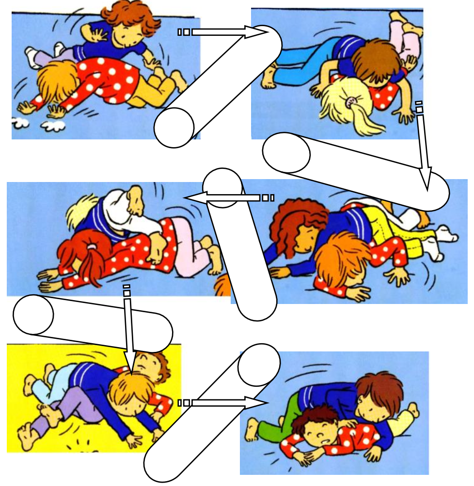

Objectif d'apprentissage
Réalisation d'actions motrices de plus en plus élaborées, accepter de plus en plus de contacts.
But
Pour les troncs d'arbres : rester immobiles dans une certaine position.
Pour les lézards : ramper en suivant un chemin tracé au sol en franchissant les troncs d'arbres par-dessus ou par-dessous.
Critères de réussite
- Les lézards rampent correctement.
- Ils franchissent les troncs d'arbres en choisissant la meilleure solution (par-dessus ou par-dessous).
Règles
- Les lézards doivent rester dans la zone de jeu.
- Ils ne doivent pas faire mal aux troncs d'arbres en les franchissant.
Organisation
Terrain délimité de 15m x 15m. Des gros objets (tapis, bancs, etc.) augmentent le nombre de franchissements à effectuer pour les lézards.
Modalités d'exécution
- Les enfants qui représentent des troncs d'arbres doivent rester immobiles (trouver une position qui leur permette de rester immobiles relativement longtemps).
Évolutions
- Varier le mode de déplacement des lézards (en quadrupédie, accroupis, etc.).
- Augmentation du nombre d'arbres.
- Grouper plusieurs enfants pour faire de gros arbres.